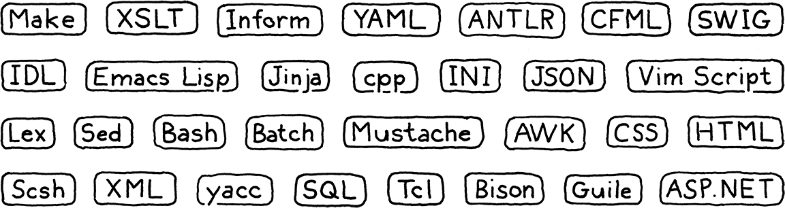

介绍
童话不仅仅是真实的：不是因为它们告诉我们有龙存在，而是因为它们告诉我们可以打败龙。
-- G.K. Chesterton by way of Neil Gaiman, Coraline
我真的很高兴我们能一起踏上这段旅程。这是一本关于实现编程语言解释器的书。这也是一本关于如何设计值得实施的语言的书。这是我刚开始接触语言时希望拥有的书，也是我近十年来一直在脑海中写的书。
致我的朋友和家人，对不起我一直心不在焉！
在这些页面中，我们将逐步介绍一个功能齐全的语言的两个完整解释器。我假设这是您第一次接触语言，因此我将介绍构建完整、可用、快速的语言实现所需的每个概念和代码行。
为了在一本书中塞入两个完整的实现而不变成门挡，本文在理论上比其他文本更轻松。在构建系统的每一部分时，我将介绍其背后的历史和概念。我会尽量让您熟悉行话，这样如果您发现自己在一个 充满 PL（编程语言）研究人员的鸡尾酒会上，您就会融入其中。
奇怪的是，我曾多次遇到这种情况。你不会相信他们中的一些人可以喝多少。
但我们主要会花费我们的脑力来启动和运行语言。这并不是说理论不重要。能够准确和正式地推理语法和语义是使用语言时的一项重要技能。但是，就个人而言，我在实践中学得最好。我很难读完充满抽象概念的段落并真正吸收它们。但是，如果我编写了一些代码，运行并调试了它，那么我 就明白了。
静态类型系统尤其需要严格的形式推理。破解类型系统与证明数学定理的感觉相同。
事实证明这并非巧合。上世纪上半叶，Haskell Curry 和 William Alvin Howard 证明了他们是同一事物的两面： Curry-Howard 同构。
那是我给你的目标。我希望您对真正的语言如何生存和呼吸有一个坚实的直觉。我希望当你以后阅读其他更理论性的书籍时，那里的概念会牢牢地留在你的脑海中，附着在这个有形的基础上。
1.1 为什么要学习这些东西？
每本编译器书籍的介绍似乎都有这个部分。我不知道是什么编程语言引起了这种存在主义的怀疑。我认为鸟类学书籍不会担心证明它们存在的合理性。他们假设读者喜欢鸟类并开始教学。
但是编程语言有点不同。我想我们中的任何人创造出一种广泛成功的通用编程语言的可能性是微乎其微的。世界上广泛使用的语言的设计者可以装在一辆大众汽车上，甚至不用把敞篷露营车放上去。如果加入那个精英团体是学习语言的唯一理由，那就很难证明是合理的。幸运的是，事实并非如此。
1.1.1 小语种无处不在
对于每一种成功的通用语言，都有一千种成功的利基语言。我们过去称它们为“小语言”，但行话经济中的通货膨胀导致了“领域特定语言”的名称。这些是为特定任务量身定制的 pidgins(混杂语言)。想想应用程序脚本语言、模板引擎、标记格式和配置文件。

随机选择一些您可能会遇到的小语言。
几乎每个大型软件项目都需要其中的一小部分。如果可以，最好重用现有的而不是滚动自己的。一旦考虑了文档、调试器、编辑器支持、语法高亮显示和所有其他陷阱，自己动手就成了一项艰巨的任务。
但是当没有满足您需要的现有库时，您仍然很有可能会发现自己需要启动解析器或其他工具。即使您正在重用一些现有的实现，您也不可避免地需要调试和维护它并深入研究它。
1.1.2 语言是很好的锻炼
长跑运动员有时会在脚踝上绑重物或在空气稀薄的高海拔地区进行训练。当他们后来卸下重担时，新的相对轻松的四肢和富含氧气的空气使他们能够跑得更远更快。
实现一种语言是对编程技能的真正考验。代码复杂且性能关键。你必须掌握递归、动态数组、树、图和哈希表。您可能至少在日常编程中使用哈希表，但您真的了解它们吗？好吧，在我们从头开始制作我们自己的之后，我保证你会的。
虽然我打算向您展示解释器并不像您认为的那样令人生畏，但很好地实施它仍然是一个挑战。坚持下去，你会成为一个更强大的程序员，并且在日常工作中更聪明地使用数据结构和算法。
1.1.3 还有一个原因
最后一个原因让我很难承认，因为它离我的心太近了。自从我小时候学习编程以来，我就觉得语言有一些神奇的东西。当我第一次按一个键敲出 BASIC 程序时，我无法想象 BASIC本身是如何制作的。
后来，当我的大学朋友谈论他们的编译器课程时，他们脸上混合的敬畏和恐惧足以让我相信语言黑客是一种不同的人类——某种被授予神秘艺术特权的巫师。
这是一个迷人的形象，但它也有阴暗的一面。我 不觉得自己像个巫师，所以我一直在想我缺乏加入阴谋集团所必需的一些先天品质。尽管自从我在学校笔记本上涂鸦了虚构的关键词以来，我就对语言着迷了，但我还是花了几十年的时间才鼓起勇气尝试真正学习它们。那种“神奇”的品质，那种排他性的感觉，把我拒之门外。
而它的从业者不惜渲染这一形象。关于编程语言的两本开创性著作的封面上都有一条龙和一个[巫师].(https://mitpress.mit.edu/sites/default/files/sicp/index.html)
当我终于开始拼凑自己的小翻译时，我很快了解到，当然，根本没有魔法。它只是代码，破解语言的人只是人。
有一些你在语言之外不常遇到的技术，有些部分有点困难。但并不比您克服的其他障碍更困难。我希望，如果你对语言感到害怕，而这本书可以帮助你克服这种恐惧，也许我会让你比以前更勇敢一点。
而且，谁知道呢，也许你会创造出下一个伟大的语言。有人必须。
1.2 这本书是如何组织的
本书分为三个部分。你现在正在读第一部分。有几章可以帮助您了解方向，教您一些语言黑客使用的行话，并向您介绍我们将要实现的语言 Lox。
其他两部分中的每一部分都构建了一个完整的 Lox 解释器。在这些部分中，每一章的结构都是相同的。本章采用单一语言功能，教您其背后的概念，并引导您完成实现。
我花了很多时间反复试验，但我设法将两个解释器分成章节大小的块，这些块建立在前几章的基础上，但不需要后面的章节。从第一章开始，您将拥有一个可以运行和使用的工作程序。随着每一章的过去，它的功能会越来越丰富，直到您最终拥有一门完整的语言。
除了丰富、精彩的英文散文外，章节还有其他一些令人愉快的方面：
1.2.1 代码
我们是关于制作解释器的，所以这本书包含真实的代码。所需的每一行代码都包含在内，每个片段都会告诉您将其插入到不断增长的实施中的何处。
许多其他语言书籍和语言实现使用诸如Lex 和Yacc之类的工具，即所谓的编译器-编译器，它们从一些更高级别的描述中自动为实现生成一些源文件。像这样的工具有利有弊，双方都有强烈的意见——有些人可能会说宗教信仰。
Yacc 是一个接受语法文件并为编译器生成源文件的工具，因此它有点像输出编译器的“编译器”，这就是我们得到术语“编译器-编译器”的地方。
Yacc 不是同类产品中的第一个，这就是为什么它被命名为“Yacc” — Yet Another Compiler-Compiler。后来一个类似的工具是Bison，命名为 Yacc 发音的双关语，如“yak”。

如果您发现所有这些小的自我引用和双关语既迷人又有趣，那么您就适合这里。如果不是，那么，也许语言书呆子的幽默感是一种后天的品味。
我们将在这里避免使用它们。我想确保没有黑暗的角落可以隐藏魔法和混乱，所以我们将手写所有内容。正如您将看到的，它并不像听起来那么糟糕，这意味着您真的会理解每一行代码以及两个解释器的工作方式。
一本书与“现实世界”有不同的约束，因此这里的编码风格可能并不总是反映编写可维护的生产软件的最佳方式。如果我似乎有点漫不经心，比如说，省略private或声明一个全局变量，请理解我这样做是为了让代码更容易看在眼里。这里的页面不像您的 IDE 那么宽，每个字符都很重要。
此外，代码没有很多注释。那是因为每一行都被几段诚实的散文所包围。当你写一本书来配合你的程序时，欢迎你也省略注释。否则，你可能应该//比我多用一点。
虽然本书包含每一行代码并讲解每行代码的含义，但它没有描述编译和运行解释器所需的机制。我假设您可以在您选择的 IDE 中拼凑一个 makefile 或一个项目，以便让代码运行。这类说明很快就会过时，我希望这本书像 XO 白兰地一样陈年，而不是后院烈酒。
1.2.2 代码片段
由于这本书几乎包含了实现所需的每一行代码，因此这些片段非常精确。此外，因为即使缺少主要功能，我也会尝试使程序保持可运行状态，因此有时我们会添加临时代码，这些代码会在以后的代码片段中被替换。
带有所有花里胡哨的片段看起来像这样：
default:
if (isDigit(c)) { //<<
number();
} else {
Lox.error(line, "Unexpected character.");
} //<<
break;
// lox/Scanner.java, in scanToken(), replace 1 line
在代码块中间部分，您有要添加的新代码。它的上方或下方可能有一些淡出的线条，以显示它在现有周围代码中的位置。还有一个小简介告诉您在哪个文件中以及在何处放置代码段。如果该宣传语说“替换 _ 行”，则您需要删除褪色行之间的一些现有代码并替换为新代码段。
1.2.3 旁白
旁白包含传记素描、历史背景、相关主题的参考以及其他探索领域的建议。您不需要了解其中的任何内容即可理解本书的后续部分，因此您可以根据需要跳过它们。我不会评判你，但我可能有点难过。
好吧，至少有些旁白可以。他们中的大多数只是愚蠢的笑话和业余图画。
1. 2. 4 挑战
每章都以一些练习结束。与倾向于复习您已经学过的材料的教科书问题集不同，这些问题集旨在帮助您了解本章内容之外的知识。他们迫使您离开引导路径并自行探索。他们会让你研究其他语言，弄清楚如何实现功能，或者让你走出舒适区。
战胜挑战，你将获得更广泛的理解，并可能遇到一些颠簸和擦伤。如果您想留在旅游巴士的舒适范围内，也可以跳过它们。这是你的书。
一句警告：挑战通常要求您对正在构建的解释器进行更改。您将希望在您的代码副本中实现这些。后面的章节假定您的解释器处于原始（“未受挑战”？）状态。
1.2.5 设计说明
大多数“编程语言”书籍都是严格的编程语言 实现书籍。他们很少讨论如何设计正在实现的语言。实施很有趣，因为它定义得如此精确。我们程序员似乎对非黑即白、1 和 0 的事物情有独钟。
我认识很多语言黑客，他们的职业生涯都是基于此。您将语言规范滑到他们门下，等待几个月，代码和基准测试结果就会出来。
就个人而言，我认为世界只需要这么多的FORTRAN 77实现。在某个时候，您发现自己正在设计一种 新语言。一旦你开始玩那个游戏，等式中更柔和、更人性化的一面就变得至关重要。诸如哪些特性易于学习、如何平衡创新和熟悉程度、哪种语法更具可读性以及对谁而言。
希望您的新语言不会将关于穿孔卡片宽度的假设硬编码到其语法中。
所有这些都会对你的新语言的成功产生深远的影响。我希望你的语言能够成功，所以在某些章节中，我以“设计笔记”结尾，这是一篇关于编程语言人性化方面某个角落的小论文。我不是这方面的专家——我不知道是否有人真的是——所以请对这些内容持保留态度。这应该使它们更美味，值得深思，这是我的主要目标。
1.3 第一个解释器
我们将用 Java 编写我们的第一个解释器jlox。重点是概念。我们将尽可能编写最简单、最干净的代码来正确实现该语言的语义。这将使我们熟悉基本技术，并磨练我们对语言应该如何表现的确切理解。
本书使用 Java 和 C，但读者已将代码移植到许多其他语言。如果我选择的语言不是你的包，看看那些。
Java 是一种很棒的语言。它的级别足够高，我们不会被繁琐的实现细节所淹没，但它仍然非常明确。与脚本语言不同，隐藏在引擎盖下的机制往往不太复杂，并且您有静态类型来查看您正在使用的数据结构。
我也是特意选择了Java，因为它是一门面向对象的语言。这种范式在 20 世纪 90 年代席卷了编程世界，现在已成为数百万程序员的主要思维方式。很有可能您已经习惯于将代码组织到类和方法中，所以我们会让您留在那个舒适区。
虽然学术语言的人有时会看不起面向对象的语言，但事实是它们甚至在语言工作中也被广泛使用。GCC 和 LLVM 是用 C++ 编写的，大多数 JavaScript 虚拟机也是如此。面向对象的语言无处不在，一种语言的工具和编译器往往是用同一种语言编写的。
编译器以一种语言读取文件，翻译它们，然后以另一种语言输出文件。您可以用任何语言实现编译器，包括它编译的相同语言，一个称为自托管的过程。
您还不能使用自身编译编译器，但是如果您有另一个用其他语言编写的适用于您的语言的编译器，则可以使用该编译器编译一次编译器。现在你可以使用你自己的编译器的编译版本来编译它自己的未来版本，你可以丢弃从其他编译器编译的原始版本。这被称为bootstrapping，来自通过自己的引导将自己拉起来的形象。

最后，Java 非常流行。这意味着您很有可能已经知道它，因此您需要学习的内容更少。如果您对 Java 不是很熟悉，请不要惊慌失措。我尝试坚持其中的一个相当小的子集。我使用 Java 7 中的菱形运算符使事情变得更简洁，但就“高级”功能而言，仅此而已。如果您了解另一种面向对象的语言，如 C# 或 C++，则可以蒙混过关。
在第二部分结束时，我们将有一个简单、可读的实现。它不是很快，但它是正确的。然而，我们只能通过构建 Java 虚拟机自己的运行时设施来实现这一点。我们想了解 Java本身是如何实现这些东西的。
1.4 第二个解释器
所以在下一部分，我们重新开始，但这次是在 C 中。C 是理解实现如何真正工作的完美语言，一直到内存中的字节和流经 CPU 的代码。
我们使用 C 的一个重要原因是我可以向您展示 C 的特别擅长的东西，但这确实意味着您需要非常熟悉它。你不必是丹尼斯里奇的转世，但你也不应该被指针吓到。
如果您还没有，请拿起一本关于 C 的介绍性书籍并仔细阅读，然后在完成后返回这里。作为回报，您将从本书中脱颖而出，成为更强大的 C 程序员。鉴于有多少语言实现是用 C 编写的，这很有用：Lua、CPython 和 Ruby 的 MRI，仅举几例。
在我们的 C 解释器clox中，我们被迫自己实现 Java 免费提供给我们的所有东西。我们将编写自己的动态数组和哈希表。我们将决定对象在内存中的表示方式，并构建一个垃圾收集器来回收它们。
我把这个名字念成“sea-locks”，但你可以把它念成“clocks”甚至“cloch”，你可以像希腊人那样念“x”，如果它能让你开心的话。
我们的 Java 实现专注于正确性。现在我们已经解决了这个问题，我们将转向也快。我们的 C 解释器将包含一个编译器，该编译器将 Lox 转换为有效的字节码表示（别担心，我很快就会了解这意味着什么），然后执行。这与 Lua、Python、Ruby、PHP 和许多其他成功语言的实现所使用的技术相同。
你以为这只是一本解释器的书吗？这也是一本编译器书。两个一个的价格！
我们甚至会尝试进行基准测试和优化。到最后，我们将拥有一个强大、准确、快速的语言解释器，能够跟上其他专业水平的实现。对于一本书和几千行代码来说还不错。
挑战
-
我拼凑起来编写和出版本书的小系统中至少使用了六种特定于领域的语言。这些是什么？
-
得到一个“Hello, world!” 用 Java 编写和运行的程序。设置让它工作所需的任何 makefile 或 IDE 项目。如果您有调试器，请熟悉它并在程序运行时单步执行。
-
对 C 做同样的事情。要练习指针，定义堆分配字符串的 双向链表。编写函数以从中插入、查找和删除项目。测试它们。
设计说明：名称中包含什么？
编写本书的最大挑战之一是为其实现的语言想出一个名称。在找到有效的候选人之前，我浏览了几页候选人。正如您在开始构建自己的语言的第一天就会发现的那样，命名非常困难。一个好名字满足几个条件：
-
它没有被使用。如果您不小心踩到别人的名字，您可能会遇到各种麻烦，无论是法律上的还是社会上的。
-
很容易发音。如果一切顺利，成群结队的人将会说出并写下您的语言的名称。任何超过几个音节或几个字母的东西都会让他们烦恼不已。
-
它足够独特，可以搜索。人们会通过谷歌搜索您的语言名称来了解它，因此您需要一个足够罕见的词，以至于大多数结果都指向您的文档。不过，随着当今 AI 搜索引擎的增多，这已经不是什么问题了。不过，如果您将语言命名为“for”，您将不会给用户带来任何好处。
-
它在许多文化中都没有负面含义。这很难提防，但值得考虑。Nimrod 的设计者最终将他的语言重命名为“Nim”，因为太多人记得 Bugs Bunny 使用“Nimrod”作为侮辱。（具有讽刺意味的是，臭虫正在使用它。）
如果您的潜在名字通过了挑战，请保留它。不要急于寻找一个能体现您语言精髓的称谓。如果世界上其他成功语言的名字对我们有什么启示的话，那就是名字并不重要。您所需要的只是一个相当独特的令牌。